A new name
MineLua becomes Tamarton.
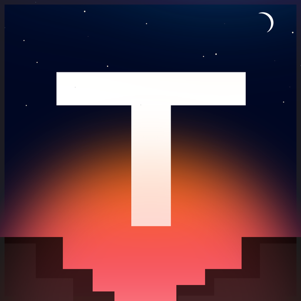
Tamarton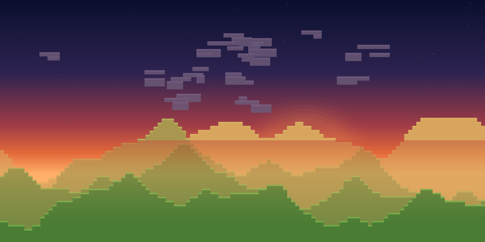
An experimental voxel world.
A voxel sandbox focused on atmosphere, exploration and believable environments. Currently in early development.
Atmospheric scattering, celestial movement, recognizable constellations and physically inspired lighting.
A fully editable block world, rendered with a more grounded visual style.
Weather, fog, ambience, lighting and sound intended to make places feel distinct.
Systems will change heavily during development.
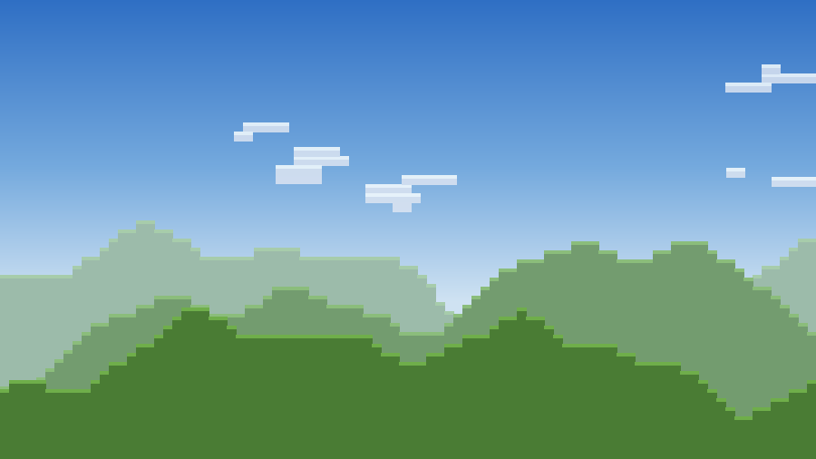
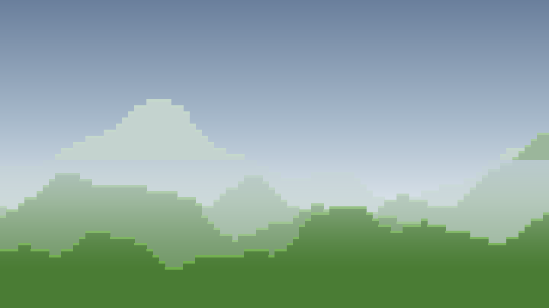
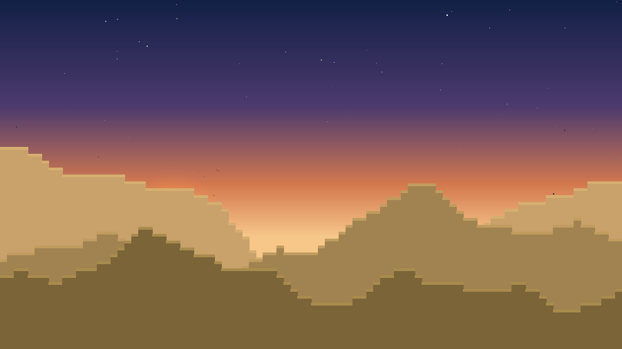
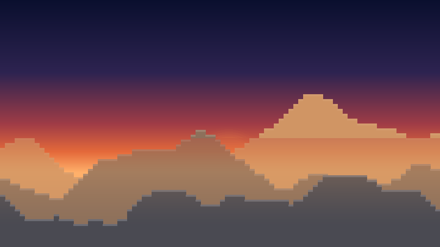
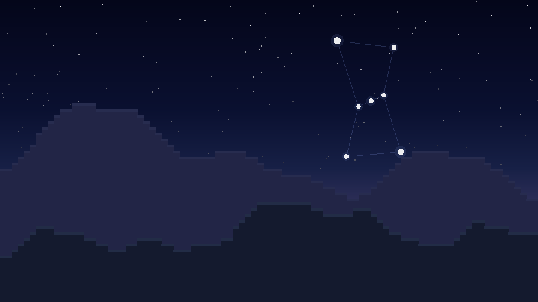
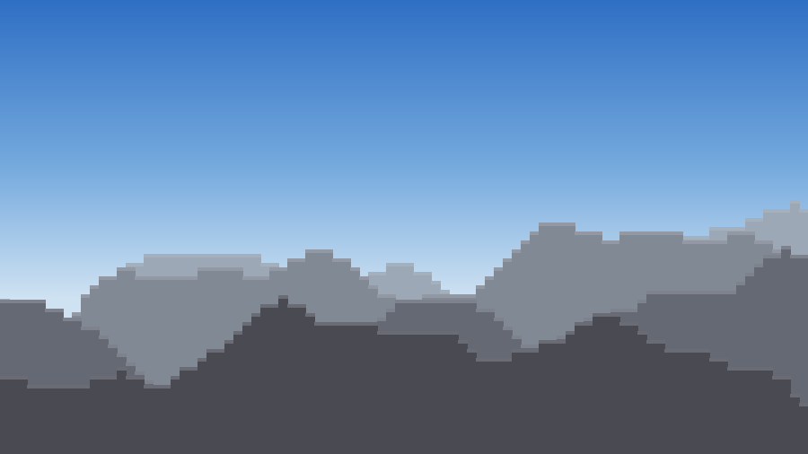
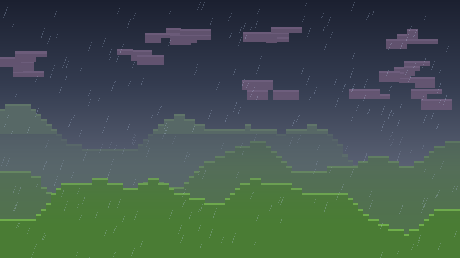
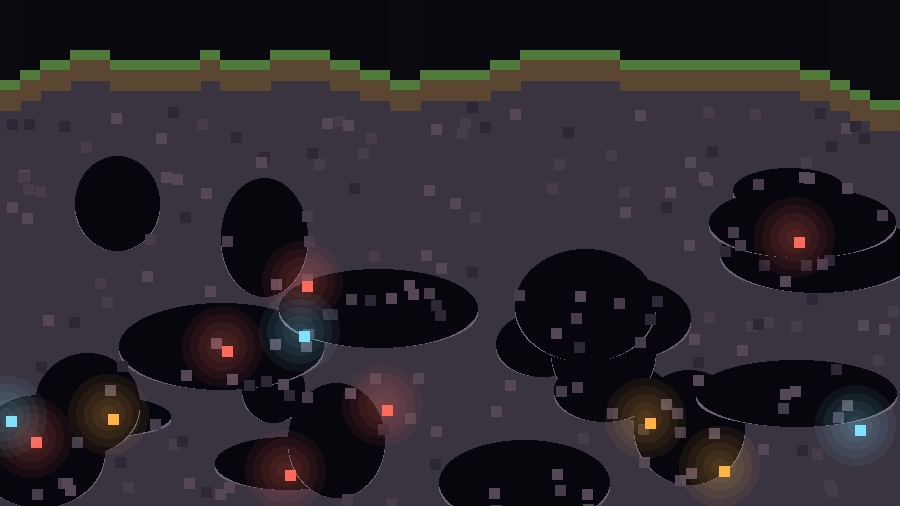
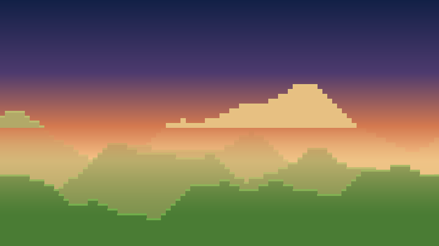
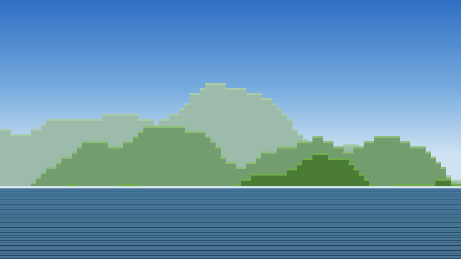
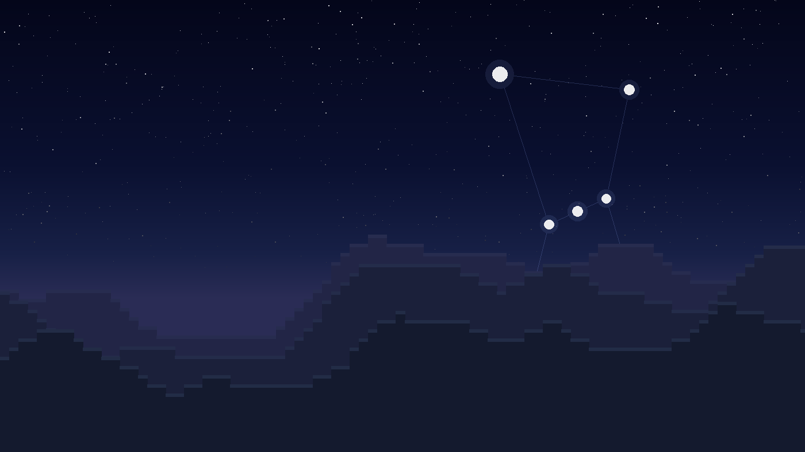
Real constellations, moon phases and changing celestial conditions.
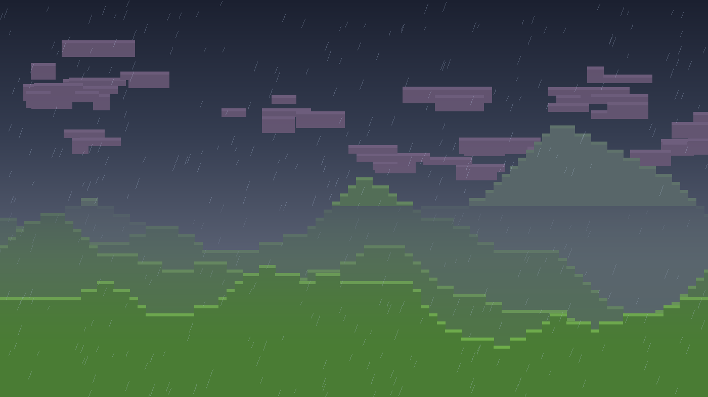
Clouds, storms, fog and local atmospheric conditions.
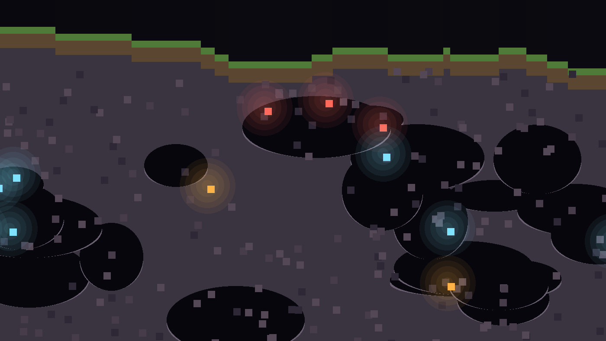
Caves, geology, varied terrain and environments.
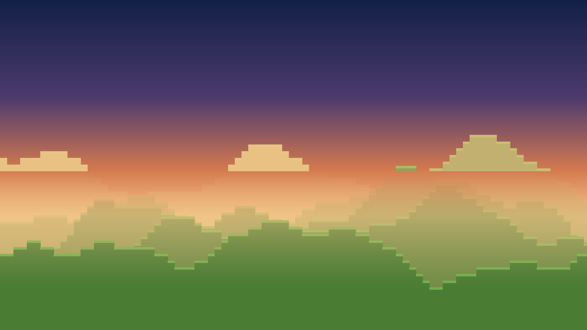
Different acoustic environments, wind, wildlife and environmental sound.
These are development goals, not guaranteed features.
Priorities may change as the game develops.
MineLua becomes Tamarton.
The sun is a real disc now, shaded through the air it sets behind.
Chunk work runs on a time budget instead of a step count.
First pass at the night sky. Real constellations still to come.